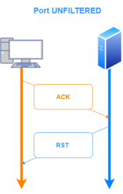
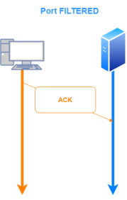

-sA: TCP ACK Scan
This scan is different than the others discussed so far in that it never determines open ports.
In the TCP ACK Scan(-sA), the ACK bit is the only one set.
Nmap label a port:
unfiltered: if
return a RST packet, the port can be both
open or
closed filtered: if
not respond, or
return ICMP unreachable error (type 3, code 1, 2, 3, 9, 10, or 13)
Usually nmap list the ones that are filtered the others consequently are unfiltered
We can use first
-sF scan technique previously seen and then
-sA technique, comparing the results can give us more precise informations about the state of a port